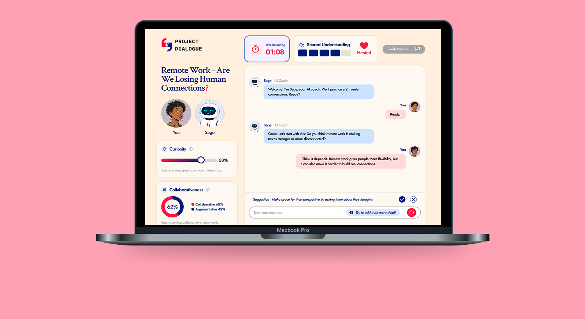

Overview
Project Dialogue
An AI-enabled civic tech platform for constructive disagreement.
- Product
- Project Dialogue is an emerging civic-tech platform rethinking how digital systems shape connection in an age of polarization. I'm designing the AI suggestions that surface during live conversations, the live barometers that reflect how an exchange is going, and the user welfare controls that keep people in charge of their time and feed.
- Challenge
- Social platforms optimize for engagement over understanding, so users need to trust a fundamentally different interaction model built around constructive disagreement.

01 Research
Let's talk competition.


I analyzed social media and match-making apps to find gaps in how platforms support cross-perspective connection.
Common strengths
- Strong content discovery
- Personalized recommendations
- Low-friction matching
- Interest-based communities
- High engagement
Common weaknesses
- Echo chambers
- Outrage-driven engagement
- No exposure to differing perspectives
- No tools for productive dialogue
Matching process
- Optimizes for shared interests and retention
- No support for navigating disagreement
- How people engage right now
- Pew Research shows how much of today's social media is built around similarity and friction.
Pew Research Center, 2024
53%
of Facebook content comes from like-minded sources.
Pew Research Center, 2024
41%
of U.S. adults have personally experienced online harassment.
Pew Research Center, 2016
53%
say political discussions online are less respectful than in-person.
Key finding: The deeper problem was interaction design. Existing apps reward attention, reactions, and similarity, but have no support for thoughtful exchange and disagreement.
02 Ideation
Where ideas met real constraints.
Before joining, users went through four onboarding stages to learn how the platform handles disagreement: an intro form, a 40+ question survey, five learning modules, and three practice conversations with other users that they had to be matched into and de-escalate to pass. That could stall onboarding for days.
The design question:
How might we introduce users to a completely new conversation platform and its unique interaction model without overwhelming them with lengthy explanations?
- Practice-first onboarding
- I replaced the modules and matched conversations with one AI practice conversation. It gives users an early, practical feel for constructive dialogue and their own communication style, without the study or the wait for a match.
Intro form→20-question survey→AI practice conversation
- Balancing business goals with user needs
- The practice conversation had to do the work of two original steps, the modules and the guided conversations with other users. The founder wanted Disagreeableness and Difference metrics with a side panel of up to three suggestions at once. I reframed those into Curiosity and Collaborativeness metrics with a single suggestion, so the screen encourages positive behavior instead of deepening division.

- The main platform
- Once users finish onboarding, they enter the main platform. Three features work together to keep conversations safe, healthy, and meaningful. This part is still a concept.
Curiosity & Collaborativeness meters
Update in real time to reflect how open and collaborative you've been.
User wellness controls
Track time on platform and flag unhealthy engagement.
Match of the day
Pairs users based on difference, not similarity, that other algorithms would've missed.

- Feedback from real people
- After creating initial designs for the onboarding and main platform, we showed them to people. We conducted 40 street interviews and met with two expert advisors, and their feedback changed our direction going into the next design pass.
People wanted positive content, not just disagreement
Added curated, constructive news with a discussion prompt, plus feed controls so people can tune how much of each type of content they see.
People wanted different ways to ease into a conversation
Split into two modes: a public forum and private 1:1s.
- Current direction
- The main platform now splits into two modes: Post Mode, a public forum with curated news prompts, and Match Mode, private one-on-one conversations. Both are still wireframes.


03 Visual Identity
Bold, but timeless.
Bold and unforgettable, but also timeless and chic. Every typographic and color decision was made to preserve that balance.
The Dialogue
Begins Here.
Crimson Text · Headlines & display
Editorial, timeless authority: headlines that feel like a broadsheet, not an app.
Start a conversation.
Share a perspective.
Change your mind.
Jost · Body & UI text
Clean and modern, balancing Crimson's formality without feeling cold.
04 Metrics
How we'll measure success.
Project Dialogue is pre-launch, so impact is still projected. These beta metrics are anchored to our three product goals.
Goal 1: Onboarding AI conversation has a positive effect
- Self-reported understanding of one's own views after onboarding
- How well people implement the AI's suggestions
- How many people successfully de-escalate
Goal 2: Improve conversation quality
- AI suggestion acceptance rate
- Conversation success rate
- Change in collaborativeness and curiosity meters over time
Goal 3: Encourage meaningful engagement
- Weekly conversations per user
- Match acceptance rate
- Retention at one week and one month
- What we hope to change
- We're not building another social app. We're designing against the patterns that made social media toxic in the first place.
- Break echo chambersCross-perspective matching, not feed-driven similarity.
- Counter harassment cultureStructured flows and AI moderation for civil disagreement.
- Normalize respectful discourseDialogue skills that carry over on and off the platform.
05 Next Steps
What's upcoming.
- Finish wireframingFully wireframe Post Mode and Match Mode, then get feedback from the team.
- More expert inputReview assumptions with experts in psychology, political science, and computer science.
- Finalize MVP designCreate high-fidelity user flows and mockups, address edge cases, and prepare engineering specifications.
06 Reflection
My takeaways so far.
The hardest part of this project isn't designing individual screens, it's shaping a new conversation system: balancing AI guidance, user autonomy, transparency, and trust. I've also had to balance my own design decisions with the founder's vision while protecting retention, and I've learned how much faster iteration gets when AI tools like Claude Design enter the workflow early.
back to top ↑